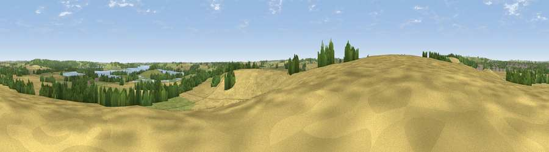

Viewpoint near Egleton
#31736 in England · top 41% of its area beats it · near EgletonWhere it is
The exact computed spot (SK 86625 06625). Click the marker for map links.
The view, rendered

A 360° render of this exact spot computed from the terrain model, tree cover and land cover — summer colours, afternoon light, calibrated against photographs of famous viewpoints. Real trees, hedges and buildings will differ in detail.
The panorama
Grey silhouette: terrain skyline in each direction (720 bearings, Earth curvature and refraction included). Dashed green: skyline with trees (+15 m) and buildings (+8 m) as obstacles. Blue strip: how far the ground is visible on each bearing.
Where the view opens
Wedge length = distance to the farthest visible ground on that bearing (vegetation-aware). Rings at 10, 25 and 50 km.
What fills the view
52% cropland · 28% grassland · 12% woodland · 5% water · 3% built-up ·
Angular shares of the visible panorama (visual magnitude), not map area. Landscape diversity 0.53 (0–1 Shannon).
Key numbers
More beautiful places nearby
The staircase of upgrades: each row has a higher view potential than everything closer. Driving times are estimates from straight-line distance, calibrated against real road routing — check an actual route before setting out.
| Place | Direction | Drive | Score |
|---|---|---|---|
| Viewpoint near Burley on the Hill | NNE · 4 km | ~9 min | 43.0 |
| Cold Overton Park | WNW · 4 km | ~10 min | 47.2 |
| Viewpoint near Owston | W · 9 km | ~18 min | 49.9 |
| Robin-a-Tiptoe Hill | WSW · 10 km | ~19 min | 54.6 |
| Whatborough Hill | W · 10 km | ~19 min | 57.1 |
| Viewpoint near Pickwell | WNW · 11 km | ~21 min | 57.3 |
| Viewpoint near Burrough on the Hill | WNW · 12 km | ~22 min | 63.4 |
| Viewpoint near Burrough on the Hill | WNW · 12 km | ~22 min | 66.0 |
52.65045, -0.72098 · source: screening · position refined by local search. Computed location — check access rights before visiting.